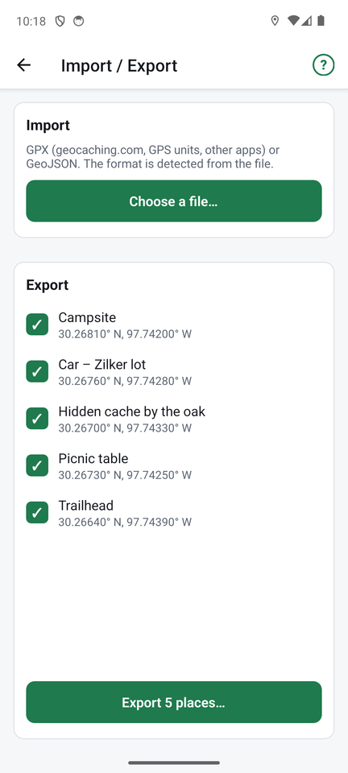

Import and export

Tap Files at the top of the places list.
Import
- Tap Choose a file… and pick a file with your phone's file picker.
- FindCache detects the format by itself: GPX (geocaching.com, GPS units and other apps) or GeoJSON.
- The places in the file are listed. Tick the ones you want and import them. Places you already have (same name and position) are skipped.
For geocaching.com files, the cache name and code become the place name, and the hint goes into the notes.
Export
- Tick the places to export.
- Tap Export N places… and choose GPX or GeoJSON.
- Android's share sheet opens, so you can save the file, email it or send it to another app.
If some of the places are found, you are asked whether to include found information. It is kept in a way other FindCache phones understand, and other apps see a normal "found" cache.
Exported files are named like findcache-2026-10-31.gpx.